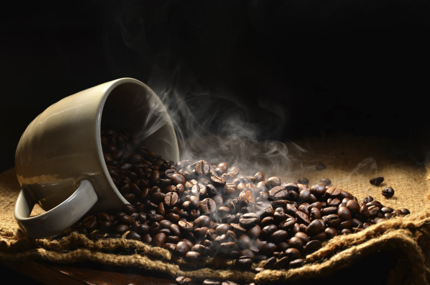

Percolator vs Espressoapparaat
Twee verschillende benaderingen van Italiaanse koffiecultuur. Wat zijn de verschillen en welke keuze past het beste bij jouw koffieritueel en budget?

Percolator
Traditioneel, eenvoudig, authentiek

Espressoapparaat
Modern, veelzijdig, professioneel